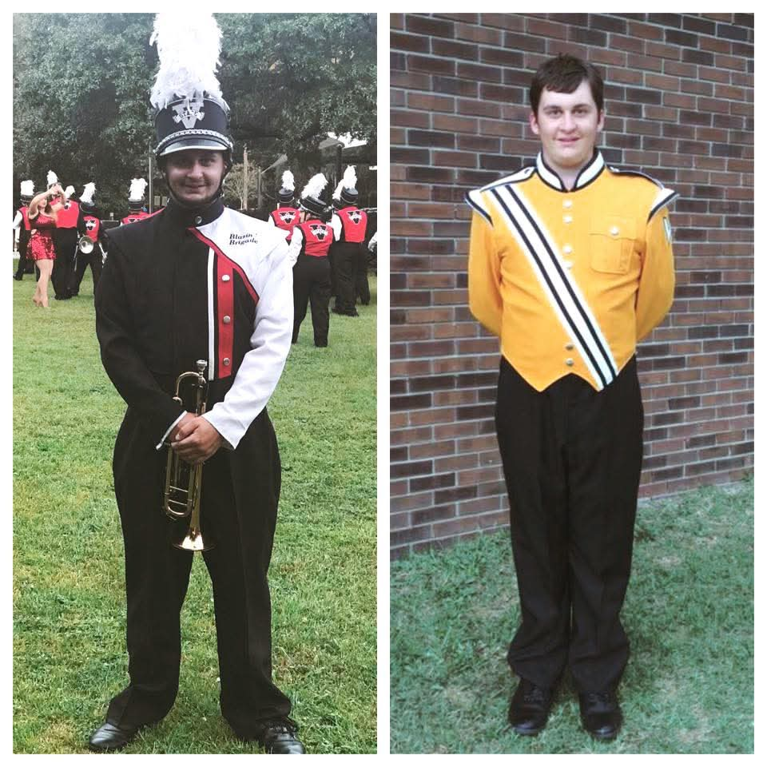

is a section to showcase a little bit about myself, my deeper interests will be discussed in detail below. A little bit about me first off is that I pretty much like anything that keeps my mind busy. At a young age, I was diagnosed with Tourettes. It was not a typical case but I had minor vocals and you could say I was blinking my eyes very hard. Growing up throughout middle and beginning of high school was a little rough with others picking on me. That is when I got into band and figured out a love for music. I did have a life outside band and spent time reading books and watching anime. There was a period of time where I didnt know what I wanted to do and tried to pick up technology. Turns out it was a boom into what I am today. While I was gaining experience with technology and phones, I went into the furry community and found my now fiance. Long story short, I was not in a good place mentally but I had something to look forward to every day. In the past 4 years I have been with my fiance, I was introduced to a ton of hobbies, activities, and regrowing my friend circle.
Music

Band was never my first choice but something I seemed interested in. Shortly after middle school started, I wanted to try out to be in band. This became a passion of mine, making music and playing the trumpet. Fast Forward to high school, where it was a completly different atmosphere. A couple of weeks later, I heard about Jazz Band. I have learned about jazz and I thought it was pretty cool. The rehersals started at 6am (2 Hrs before school.), with that in mind, I couldn't drive just yet and I was thiking how I would have to wake up my dad to drive me to school. I told them about tryouts and I tried out with the intent of not making it. Turns out, there are others that were slightly not as musical as me. Freshman year, I made 4th chair in the trumpet section. I loved it and continued the next 3 years where I was lead trumpet. Being in band brought a very good environment and I made band friends. This gave me something to do after school to put my mind in a busy state.
Anime

I used to watch anime with my dad as a kid and I thought it was a really cool genre of shows. I stopped watching as I went through middle school and didn't pick it back up until high school. On the weekends, I would watch more anime over regular shows and was constantly being introduced to new shows (Just like regular shows).Now the only shows I really watch are anime shows and I love the action within each episode, learning about the different characters.
Technology
Going through high school, Junior year, I found another hobby. Technology. I grab the concept of tech and learned new features and diving into it more and more. By the time I graduated high school, I have grasped the concepts of what makes a computer run and expanding my knowledge onto phones and tablets. In my working career, I have been employed by major tech companies since 2018. I worked at best buy and office max to expand and implement my knowledge towards my job. There was a position as a cell phone repair technician and I applied. I ended up being a manager at the store and a year later, it closed due to the owner. During and after, I exponentally expanded my knowledge of phones. Now having the knowledge of the hardware and software, I related that to a computer. After that, I wanted to do something like the cell phone repair job and wanted to know the process of selling a phone. I was employed by Cricket, Verizon, and now I am the assistant manager of my local AT&T store. I still love technology but after working at all 3 companies, I am a little worn with customer questions being asked multiple times a day, every day just about. This is when I discovered coding (read the coding section for more detail).
Furry
TL:DR: I was not in a good headspace when I came to the realization I was in the furry community but didn't realize it. While I was in that headspace, I wanted to get out of it and wanted to express my other emotions in a certain way. The furry community is amazing, despite some 'bad apples' that appear every now and again. For the complete definition click here.
DnD
Shortly after being together with my now fiance, I was introduced to Dungeons and Dragons. It was a passion of my fiance (being that he's really into medievel and dragons), and I wanted to be there to support him. Little did I know, I was going to enjoy it too. Creating a character with my fiance and the process excited me. The group of friends that I was introduced to, were really amazing (the still are) and helped me where I needed it. We first didn't play actual Dungeons and Dragons but instead, we played Dragon Age (a variation on DnD). We still have to have our schedules line up again but we are planning our next session as you're reading this.
Coding
Throughout my tech journey, I discovered and picked up coding on and off (until now). Coding is how a computer runs. Wheather it is loading the OS of a device, or adding a new application. I picked up this degree program to take baby steps, know the syntax of a website and eventually want to go towards software enginering as a whole. I now have experience with HTML and CSS along with a little bit of Python. My hunger for knowledge, diving deep into this career field, I am so far grasping concepts and implementing them into projects. This webpage is utilizing my skills that I have learned so far. I cannot thank my instructors enough to lead me in the right direction and the content that has been taught. I look forward to future features to further expand my experience and looking at the bigger picture.